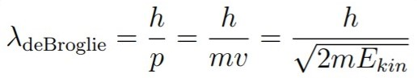
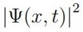

Physik 3

Vorbereitungsfragen zur mündlichen Prüfung in Experimentalphysik 3. Viel Erfolg.
Raleigh-Jeans-Gesetz: Näherung für große Wellenlängen/ kleine Frequenzen des Plankschen Strahlungsgesetzes. Es gibt die spezifische Ausstrahlung eines Hohlraumstrahler in Abhänigkeit von der Wellenlänge/Frequenz an.

Herleitung aus plankschen Strahlungsgesetze.
Planksche Strahlungsgesetz: Gibt für unterschiedliche Temperaturen die elektromagnetische Energie(Strahlungsleistung) der Wärmestrahlung eines schwarzen Körpers in Abhänigkeit der Wellenlänge/ Frequenz an.

Herleitung: Plank benutzte den gleichen Ansatz wie Rayleigh (Anzahl der Schwingungsmoden in einem Hohlraumresonator). Dabei unterschied sich die mittlere Energie. Zudem wurde angenommen, dass die Energie quantisiert von Oszilatoren (Wand des schwarzen Körpers) abgegeben wird.
Plank machte zunächst 2 Fehler, welche sich jedoch ausglichen.
1. Quantisierungsbedingung fur die Energie der Eigenschwingungen der Atome an der Wand des Hohlraums falsch angegben (Falsche Energiegleichung).
2. Für die Besetzung der Niveaus wurde die Maxwell-Boltzmann-Statistik verwendet anstelle der Bose-Einstein-Statistik.
Das Gesetz gibt die abgestrahlte Leistung pro Flächenelement eines Körpers mit einer Temperatur T an.

Herleitung: Plancksches Strahlungsgesetz über alle Frequenzen integrieren.
Photoeffekt: Genau ein Photon, welches absorbiert wird, löst ein Elektron aus einem Festkörper, wodurch ein Stromfluss entsteht. Dabei wurde beobachtet, dass die Spannung des Stroms nur von der Frequenz der Lichtquelle abhängt, der Strom hingegen von der Intensität.
Austrittsarbeit: Arbeit, die mindestens Benötigt wird um ein Elektron aus einem Festkörper zu lösen.
Comptoneffekt: 1922 gelang es Compton den Teilchenckarakter von Photonen nachzuweisen. Es wird ein Photon an einem Elektron gestreut, dadurch vergrößert sich die Wellenlänge des Photons.
Freie Elektronen: Schwach gebunden äußere Elektronen die von Photonen aus ihrem Bindungszustand herausgelöst werden können, indem die Photonen Energie und Impuls übertragen. Sind wichtig damit beliebige Energieaufnahme möglich ist.
Compton-Wellenlänge: Wellenlänge des Elektrons, wenn Photon um 90° gestreut wird.
deBroglie verknüpfte den klassischen Impuls eines Teilches mit einer Wellenlänge, der deBroglie-Wellenlänge.
Auch als deBroglie-Welle bezeichnet, beschreibt der Begriff das wellenartige Verhalten von Materie
Problem: Ausdrücke können imaginär werden, weil Welle teilbar ist (Strahlteiler) und Teilchen nicht. (Problem imaginär und unteilbar)
Mateiewellen haben imgegensatz zu Photonen Dispersion (Welle läuft in Raum und Zeit auseinander), weshalb die Frequenz der Welle von der Wellenläng abhängt. (Problem der Lokalisierbarkeit).
 beschreibt die Wahrscheinlichkeit am Ort x zum Zeitpunkt t ein Teilchen vorzufinden.
Schrödingers Katze: Gedankenexperiment bei dem die Katze zwei Zustände annimmt, tod und lebendig.
Ort und Impuls können nicht gleichzeitig beliebig scharf gemessen werden.

Gilt ebenfalls für Energie und Zeit.
Bohr'sche Atommodell: Elektron als klassisches Teilchen, welche sich auf diskreten Kreisbahnen um Kern drehen. Bei der Kreisbewegung wird keine Leistung abgestrahlt (Wiederspruch zu Elektrodymnamik.).
Die Quantisierung lässt sich experimentell mit dem Frank-Hertz-Versuch zeigen.
Wenn Elektronen von einem höheren Energieniveau auf ein niedrigeres Fallen, wird Licht emittiert. Da die Bahnen (Energieniveaus) diskret sind, sind es auch die Wellenlängen.
Bestimmte Folgen von Emissions-Spektrallinien werden als Serien bezeichnet. Dabei gibt es z.B. die Balmer-, Lyman-, Paschen- oder Brackett-Serie.
Die Gesetze der Quantenphysik sollen bei großen Quantenzahlen in die Gesetze der klassischen Physik übergehen.